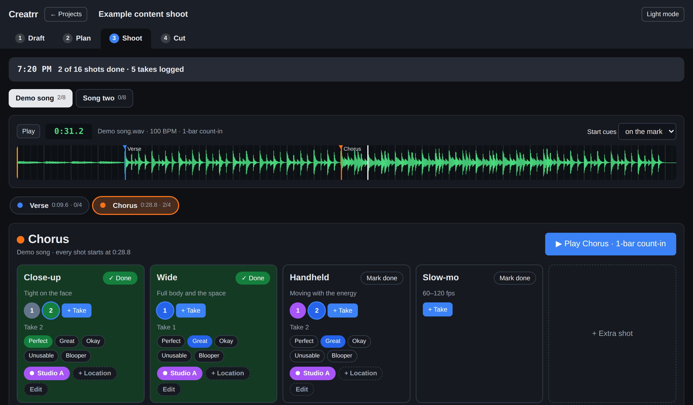
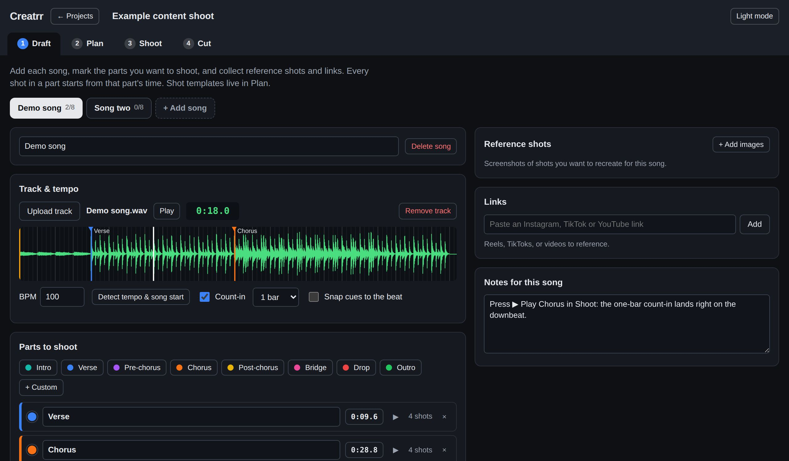
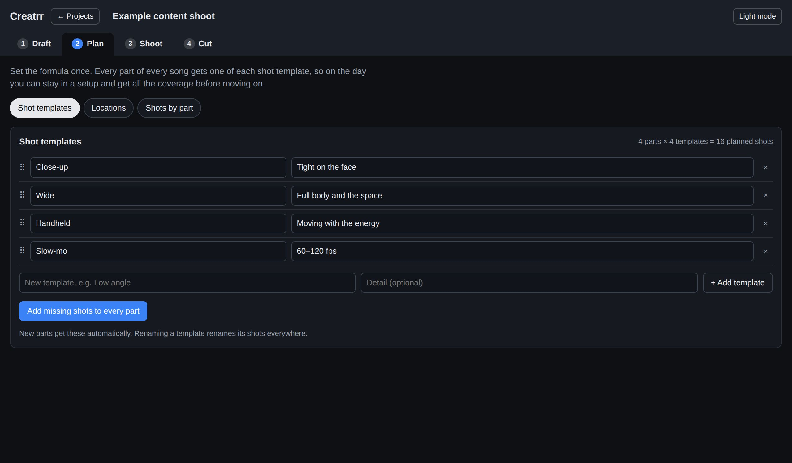
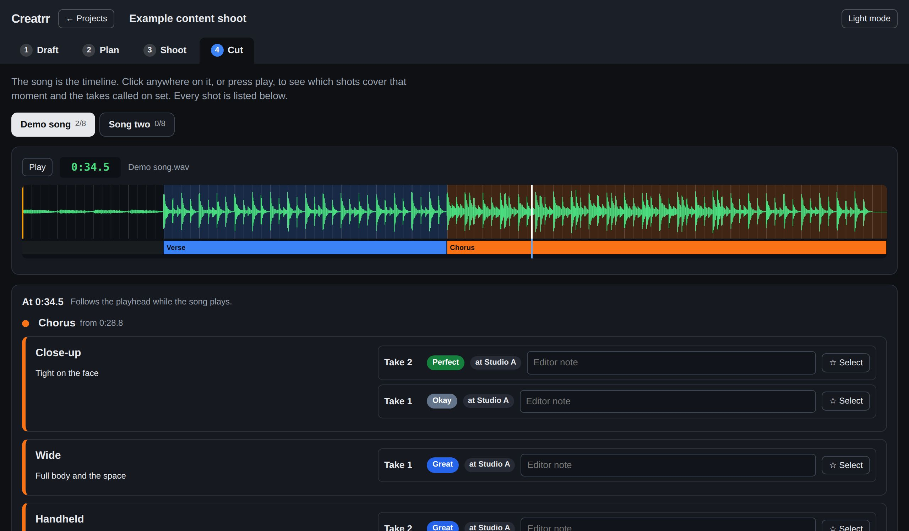

Creatrr turns a song into a shot plan. Mark the parts, stamp your go-to shots on each one, and roll with a click-track count-in cued to the exact spot. Every take is rated and tagged, so your editor knows what to use.
No card needed for the trial.

Music content is formulaic in the best way: the same strong shots, on the parts of the song that matter, as many times as you can. Creatrr is built around exactly that.
Upload each track. Creatrr finds the tempo and where the music starts, then you mark the parts you want to shoot, with references and links alongside.
Set your templates once (close-up, wide, handheld, slow-mo) and every part gets one of each. Assign where each part gets shot.
Pick a part and hit play. A count-in brings talent in right on the downbeat. Log takes, rate them, and move on in a couple of taps.
Your editor scrubs the song and sees every shot that covers that moment, with the best takes first and notes from set.
Creatrr detects the tempo and the first beat of every song, so cues start exactly on the grid. Talent hears one or two bars of click, then the song — no counting off, no fumbling for the spot.

Content shoots repeat the same coverage on every part. Set that coverage once as templates, and Creatrr builds the whole shot list across every song for you.

Every take is rated Perfect, Great, Okay, Unusable or Blooper, and tagged with where it was shot. In Cut, the song is the timeline: click any moment to see the shots that cover it, best takes first.

Basements, rooftops, parking garages, no signal. Creatrr keeps working.
Songs download to your phone in the background. Takes logged offline upload by themselves when you're back in range.
Everything lives in your account and syncs across devices. Add it to your home screen and it runs like an app.
WAV, MP3, M4A, AIFF. Big masters sync as a lighter copy that keeps timing sample-exact on every device.
Every plan includes every Creatrr feature. Pick the storage you need for your songs and references, and change or cancel any time.
Every account starts with a 14-day free trial with 5 GB of storage. No card needed.
Yes. Your songs download to your phone in the background, so playback and count-ins work with no signal. Takes you log offline wait on the device and upload by themselves once you're back online.
No. Open creatrr.co/app in Safari or Chrome on your phone, then choose "Add to Home Screen" to launch it like an app. It works the same on a laptop.
Anything your browser can play: WAV, MP3, M4A, AIFF and more. Large WAV masters sync as a lighter 16-bit copy so every device plays in perfect time; your original never gets altered.
Only you. Songs and shoots are private to your account, protected on the server so no one else can reach them, and never used for anything else.
Nothing is deleted. Your shoots stay safe and viewable; choose a plan to keep adding songs.
Yes, from your account in a couple of clicks. You keep your plan until the end of the period you've paid for.
Try it free for 14 days, or play with the demo first.